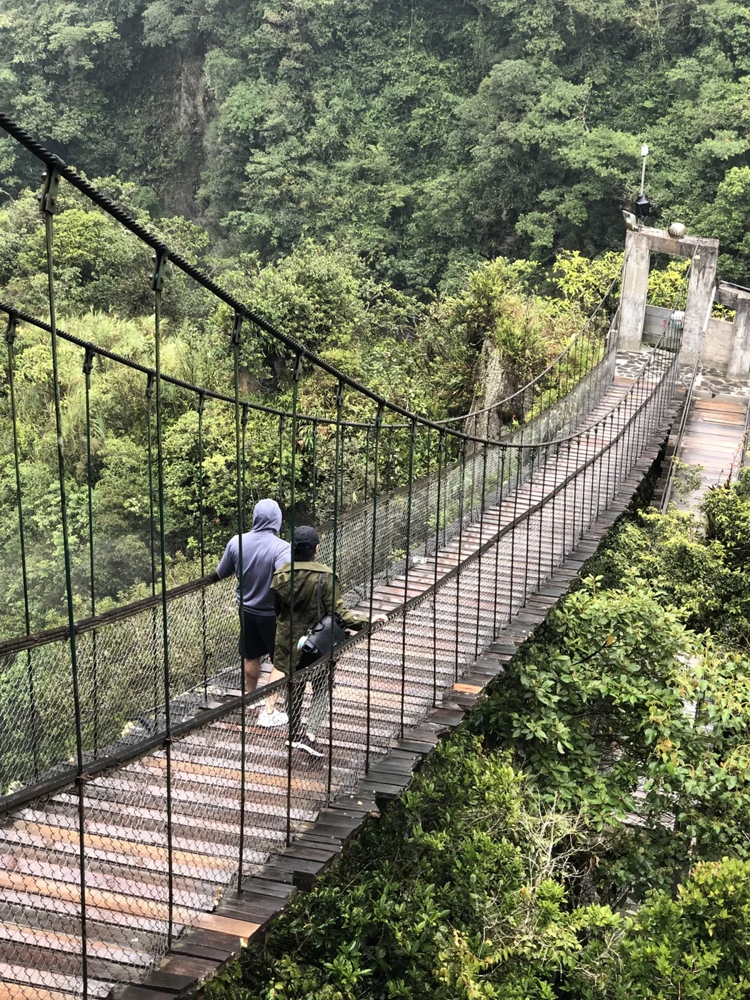
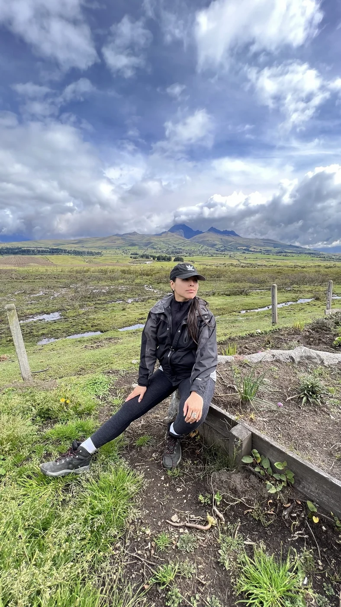
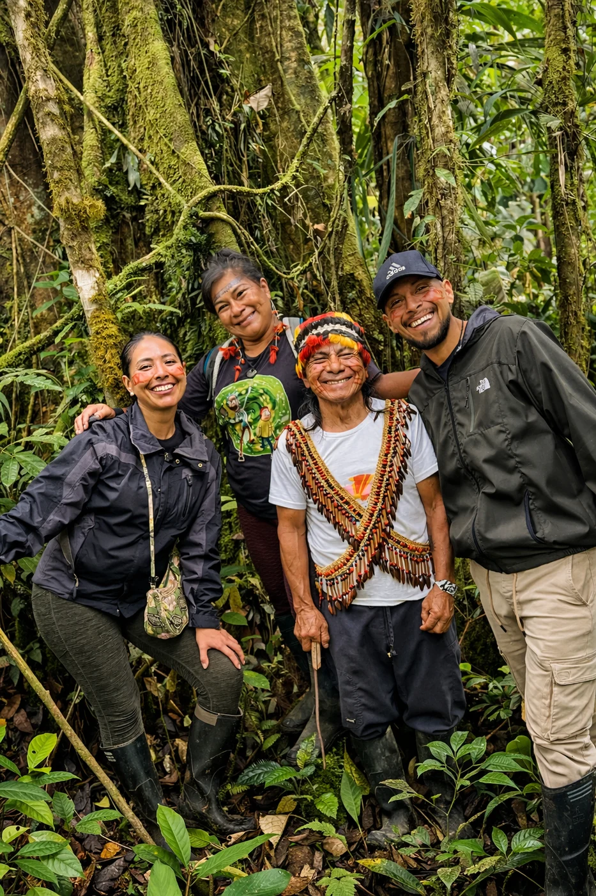
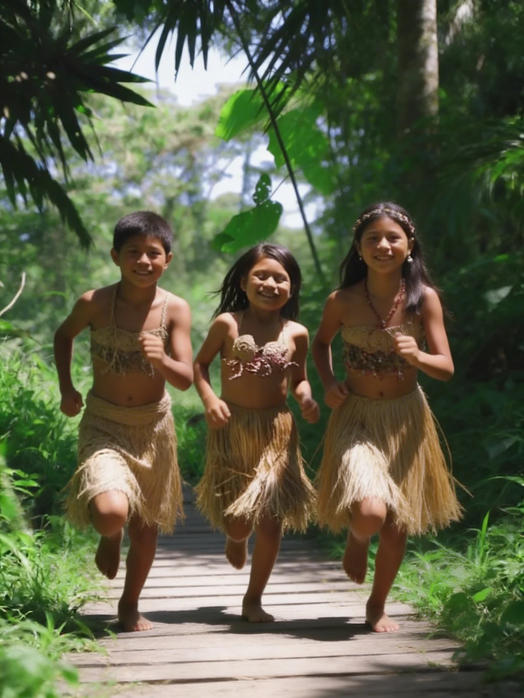

Direct relationships
We favour sustained human partnerships and traceable conversations over anonymous commodity sourcing.
 KAWSAYPACANCESTRAL HERBS
KAWSAYPACANCESTRAL HERBSOur story
Kawsaypac grew from Raisa and Brian's relationship with Ecuador, its landscapes, and the people who have kept plant knowledge alive across generations.



The origin
When Raisa and Brian moved to Ecuador, they did not arrive with a polished business plan. They arrived ready to listen. The mountains, forests, rivers, and communities around them gradually reshaped how they thought about health, reciprocity, and what it means to make something well.
Plant traditions opened a deeper conversation. Kawsaypac was built to honour that conversation through direct relationships, thoughtful sourcing, clear education, and blends made in small batches.
Kawsaypac means for life. That is the standard we return to in every relationship and every blend.
How we work
Our products begin long before the pouch. They begin with the people, places, seasons, and responsibilities attached to each plant.
We favour sustained human partnerships and traceable conversations over anonymous commodity sourcing.
Price, labour, knowledge, and consent belong in the same conversation. Respect has to be practical.
Harvest timing, plant abundance, and habitat health matter. Taking less can be part of doing the work well.
We share context, preparation, and limits so people can approach herbal practice with grounded expectations.
A vertical country
Altitude changes climate, ecology, and tradition. Each stop teaches us to work at the pace of place.
Wind, volcanic soil, and resilient mountain botanicals.
Moisture, shade, and a dense exchange between forest layers.
Warmth, abundance, and community cultivation close to home.
Vast biodiversity held within living systems of knowledge.


Relationship before remedy
Kawsaypac exists because knowledge has been tended by families and communities over time. We approach each relationship as learners and collaborators, not owners of a tradition.
That means asking how a plant should be gathered, what a fair exchange looks like, and when the right answer is to wait. It also means making room for the story of origin to travel with the product.
We are not trying to make ancient knowledge feel trendy. We are trying to build a respectful bridge to a daily practice.Raisa + Brian, founders of Kawsaypac
Begin where you are
Explore the plants, learn how to prepare them, or find the blend that fits the support you are looking for.